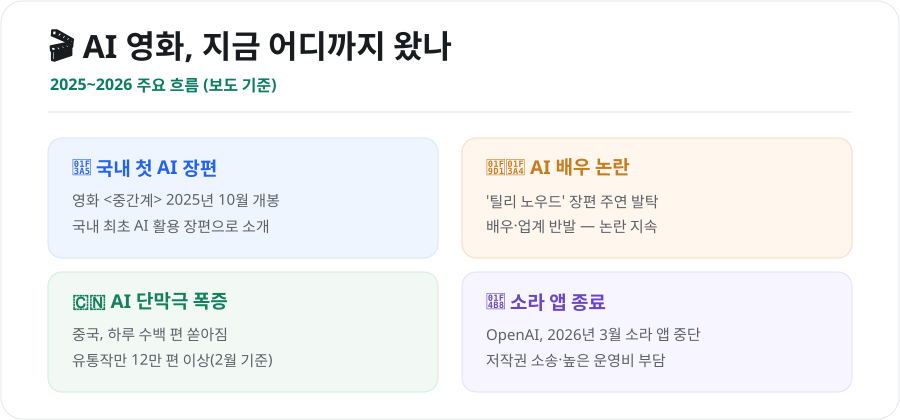
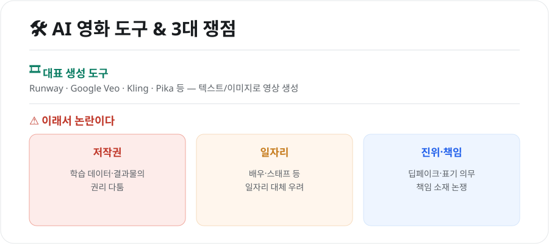

AI 영화, 어디까지 왔나 (2026) — 국내 첫 AI 장편·AI 배우 논란·기술과 쟁점
텍스트 몇 줄로 영상을 만들어내는 생성형 AI가 이제 '영화'의 영역까지 들어왔습니다. 짧은 영상 클립을 넘어 장편영화와 'AI 배우'까지 등장하면서, 기대만큼이나 논란도 뜨겁습니다. 2026년 현재 AI 영화가 어디까지 왔는지, 무엇이 쟁점인지 정리했습니다.

1. 2026년, AI 영화의 현주소
- 국내 첫 AI 활용 장편: 영화 〈중간계〉가 2025년 10월 개봉해 국내 최초의 AI 활용 장편영화로 소개됐습니다.
- AI 배우 논란: '틸리 노우드'라는 AI 배우가 장편 영화 주연으로 발탁되며 배우·업계의 반발을 불러왔고, 논란이 계속되고 있습니다.
- 콘텐츠 폭증: 중국에서는 AI로 만든 단막극이 하루 수백 편씩 쏟아져, 유통 중인 작품만 12만 편이 넘는 것으로 전해집니다.
- AI 영화제: AI로 만든 작품만을 위한 영화제들도 생겨나, 국내에서도 관련 국제영화제가 열렸습니다.
이처럼 AI 영상 제작은 '실험'을 넘어 하나의 산업 흐름으로 자리 잡아가고 있습니다.
2. 소라(Sora) 앱 종료가 남긴 것
한편 OpenAI는 화제를 모았던 AI 영상 생성 앱 소라(Sora)를 2026년 3월 종료한 것으로 알려졌습니다. 배경으로는 저작권 소송 리스크와 막대한 운영 비용이 꼽힙니다.
- 하루 추론 비용은 크게 들었지만 매출은 이에 미치지 못했고,
- 다운로드도 빠르게 줄면서 서비스 지속이 어려워졌다는 분석입니다.
이는 "기술이 놀랍다고 곧바로 지속 가능한 사업이 되는 것은 아니다"라는 점을 보여주는 사례입니다.
3. 무엇이 문제인가 — 3대 쟁점

⚖️ 저작권
AI가 무엇을 학습했는지, 그 결과물의 권리는 누구에게 있는지를 두고 다툼이 이어집니다. 기존 창작물을 무단 학습했는지가 소송의 핵심 쟁점입니다.
💼 일자리
AI 배우·AI 생성 영상이 늘면서 배우·스태프 등 기존 인력의 일자리 대체 우려가 큽니다. 창작 생태계를 어떻게 지킬지가 과제로 떠올랐습니다.
🎭 진위와 책임
실제와 구분이 어려운 영상이 만들어지면서 딥페이크·표기 의무, 문제가 생겼을 때의 책임 소재가 중요해졌습니다.
4. 대표 도구들
현재 AI 영상 제작에는 Runway, Google Veo, Kling, Pika 등이 많이 쓰입니다. 텍스트나 이미지를 넣으면 짧은 영상을 만들어주며, 이를 편집·연결해 더 긴 작품을 완성합니다. (각 도구의 사용법은 별도 가이드를 참고하세요.)
5. 앞으로는?
AI는 제작 비용과 진입 장벽을 크게 낮춰, 1인 창작자도 영화적 영상을 만들 수 있게 했습니다. 동시에 저작권·일자리·윤리 문제를 풀지 못하면 갈등이 커질 수밖에 없습니다. 결국 관건은 "AI를 어떻게 쓰고, 누가 책임질 것인가"에 대한 사회적 합의입니다.
마무리
AI 영화는 이미 실험실을 벗어나 극장과 시장에 들어왔습니다. 창작의 문턱을 낮추는 도구가 될지, 창작 생태계를 흔드는 변수가 될지는 제도와 합의에 달려 있습니다. 기술의 속도만큼 논의의 속도도 중요해진 시점입니다.
본 글은 공개된 언론 보도와 자료를 바탕으로 정리한 참고용 정보입니다. 개별 작품·서비스·소송의 사실관계는 시점에 따라 달라질 수 있으므로, 최신 보도를 함께 확인하시기 바랍니다.
참고 자료 - 영화진흥위원회(KOFIC) AI 관련 자료 - AI 영화·AI 배우 관련 국내외 언론 보도(2025~2026)